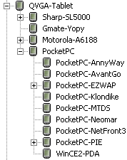

MCS supports fallback in applying policies and in locating variants that best match device capabilities.
The fallback mechanism in MCS allows you to add policy information at the most convenient point in the device hierarchy. You can share policies across devices, without limiting your ability to specify values for particular cases.
MCS searches up the tree from child to parent, until it finds a suitable policy, right up to the root, or Master, device.
For example, suppose that MCS needs to work out which styles to apply to a heading on a page for a PocketPC with Pocket Internet Explorer. First, it looks for a theme policy for PocketPC-PIE and uses the policy if there is one. However, if there is no entry, the fallback is queried. In this case it is the parent entry for the PocketPC. If there is no specific entry here, QVGA Tablet is queried next, and so on up the device tree.

Fallback also applies when MCS searches for variants in alternative components if a match with a device is not found in a component you refer to in XDIME.
MCS attempts to locate variants in the following order where there is a variant defined for a component.
Related topics
Developing MCS policies
Using convertible images
Generic assets
Component fallback